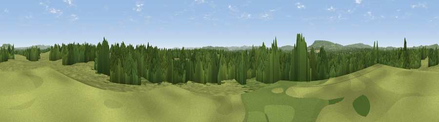

Nell Ball
#28053 in England · top 41% of its area beats it · near PlaistowThe view, rendered

A 360° render of this exact spot computed from the terrain model, tree cover and land cover — summer colours, afternoon light, calibrated against photographs of famous viewpoints. Real trees, hedges and buildings will differ in detail.
The panorama
Grey silhouette: terrain skyline in each direction (720 bearings, Earth curvature and refraction included). Dashed green: skyline with trees (+15 m) and buildings (+8 m) as obstacles. Blue strip: how far the ground is visible on each bearing.
Where the view opens
Wedge length = distance to the farthest visible ground on that bearing (vegetation-aware). Rings at 10, 25 and 50 km.
What fills the view
51% woodland · 46% grassland · 3% cropland ·
Angular shares of the visible panorama (visual magnitude), not map area. Landscape diversity 0.36 (0–1 Shannon).
Key numbers
More beautiful places nearby
The staircase of upgrades: each row has a higher view potential than everything closer. Driving times are estimates from straight-line distance, calibrated against real road routing — check an actual route before setting out.
| Place | Direction | Drive | Score |
|---|---|---|---|
| Viewpoint near Haslemere | W · 7 km | ~15 min | 68.9 |
| Viewpoint near Hascombe | N · 8 km | ~15 min | 70.1 |
| Viewpoint near Fernhurst | W · 8 km | ~16 min | 75.1 |
| Barlavington Down | SSW · 16 km | ~28 min | 77.3 |
| Bignor Hill | S · 18 km | ~31 min | 84.4 |
| Linch Down | SW · 20 km | ~34 min | 85.2 |
| Beacon Hill | WSW · 23 km | ~38 min | 85.8 |
| Chanctonbury Ring | SE · 23 km | ~38 min | 87.0 |
51.06873, -0.57409 · source: dobih hill · position refined by local search. Computed location — check access rights before visiting.